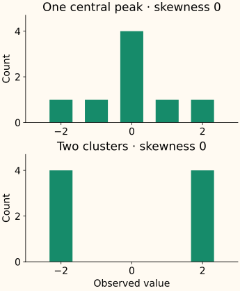

Skewness: What It Measures and When It Matters
Skewness describes an imbalance in a distribution; it is not a diagnosis that the feature needs fixing. A few large values in a right tail can strongly affect a mean, variance, or distance calculation. Whether that matters depends on the model and what those values represent.
Begin by looking at the data. Then use a named skewness statistic to summarize one aspect of its shape. This chapter explains the common moment-based statistic and where that summary stops being useful.
See one large value change the balance
Our five observations are [1, 2, 3, 4, 9]. Four lie between 1 and 4; the last lies farther to the right. Their mean is 3.8. Move only the last observation to see how the mean and moment-based skewness change together:
Why the formula cubes the deviations
Let $x_1,\ldots,x_n$ be the observed values and $\bar x$ their mean. A deviation $x_i-\bar x$ is positive above the mean and negative below it. Squaring deviations measures spread but loses their signs. Cubing preserves their signs and gives distant observations more influence.
Call the average squared deviation $m_2$ and the average cubed deviation $m_3$. Both averages use all $n$ observations:
The square root of $m_2$ is a standard deviation computed with divisor $n$. Divide $m_3$ by its cube to remove the measurement units. The resulting Fisher–Pearson moment coefficient is
For [1, 2, 3, 4, 9], the deviations are [−2.8, −1.8, −0.8, 0.2, 5.2]. Their average square is 7.76 and their average cube is 22.464, giving $g_1\approx1.0392$. The large positive deviation dominates the cubed-deviation sum.
A positive value indicates that the positive cubed deviations dominate; a negative value indicates the opposite. For familiar single-peaked shapes, this usually matches the visual language of a right or left tail. For complicated or multimodal data, inspect the plot rather than inferring its entire shape from the sign.
Why two libraries can report different values
Some software reports a sample-size-adjusted coefficient. For more than two observations, call that coefficient $G_1$:
For the five observations above, this gives about 1.5491 rather than 1.0392. SciPy’s skew(x, bias=True) uses the unadjusted moment coefficient; bias=False applies the sample-size adjustment when applicable. Report the convention when comparing values.
If all observations are equal, the variance is zero and the moment ratio is undefined. SciPy returns NaN for that case. Missing values require an explicit policy; a default NaN-propagating calculation differs from one that omits missing observations.
Zero skewness does not mean a normal distribution

Skewness and tail weight are also different properties. A symmetric distribution can have substantial tail mass. Moment-based summaries can be unstable in small samples or dominated by extreme observations; some population distributions do not even have the finite moments required by the population definition.
Plot the values or an appropriate histogram, inspect sample size, and check whether unusual observations are valid measurements. There is no universal skewness cutoff that tells every model to transform a feature.
Connect the shape to a modeling mechanism
| Concern | What to investigate |
|---|---|
| A few values dominate distance or variance | Are absolute differences meaningful, or are relative changes more relevant? A log transform changes that geometry. |
| A linear model misses a curved relationship | Inspect how the target changes with the feature. A transformation should help describe that relationship, not merely make the marginal histogram prettier. |
| Inference assumes a particular error distribution | Examine the conditional errors or residuals relevant to that model. A normally distributed feature is not a substitute for those assumptions. |
Ordinary least squares does not require each input feature to be normally distributed. See the regression assumptions notes for the distinction between predictors and errors. Transforming a feature can also discard or compress useful signal, so compare the full model under an appropriate validation design.
Standardization preserves distribution shape: centering and dividing by a positive scale leave $g_1$ unchanged. Reflecting the values with a negative multiplier flips its sign. To change skewness, you need a different operation, not just new units.
Compute the moments and check the convention
Run the calculation and invariance checks
import numpy as np
from scipy.stats import skew
from sklearn.preprocessing import StandardScaler
x = np.array([1., 2., 3., 4., 9.])
centered = x - x.mean()
m2 = np.mean(centered ** 2)
m3 = np.mean(centered ** 3)
g1 = m3 / m2 ** 1.5
print(round(x.mean(), 4), round(m2, 4), round(m3, 4))
print(round(g1, 6), round(skew(x, bias=False), 6))
assert np.isclose(g1, skew(x, bias=True))
z = StandardScaler().fit_transform(x[:, None]).ravel()
assert np.isclose(skew(z), g1)
assert np.isclose(skew(-x), -g1)
3.8 7.76 22.464
1.039189 1.549131C++: make the moment convention explicit
This finite-valued sample implementation computes the unadjusted coefficient, then the main function applies the adjustment for our five observations. It returns NaN for a constant sample. For very large offsets or extreme magnitudes, use numerically stable accumulation appropriate to the data rather than assuming these short sums are sufficient.
Compile the two skewness coefficients
#include <cmath>
#include <iomanip>
#include <iostream>
#include <limits>
#include <stdexcept>
#include <vector>
double moment_skewness(const std::vector<double>& x) {
if (x.empty()) throw std::invalid_argument("empty sample");
double mean = 0;
for (double v : x) {
if (!std::isfinite(v)) throw std::invalid_argument("finite values required");
mean += v;
}
mean /= x.size();
double m2 = 0, m3 = 0;
for (double v : x) {
const double d = v - mean;
m2 += d * d; m3 += d * d * d;
}
m2 /= x.size(); m3 /= x.size();
if (m2 == 0) return std::numeric_limits<double>::quiet_NaN();
return m3 / (m2 * std::sqrt(m2));
}
int main() {
const std::vector<double> x{1,2,3,4,9};
const double g1 = moment_skewness(x), n = x.size();
const double adjusted = std::sqrt(n * (n - 1)) / (n - 2) * g1;
std::cout << std::fixed << std::setprecision(6)
<< g1 << " " << adjusted << "\n";
}
1.039189 1.549131References and further reading
- SciPy: skew — moment definitions, sample-size adjustment, missing values, and constant samples.
- NIST: measures of skewness and kurtosis — tail direction, alternative conventions, and why plots complement moment summaries.
- NIST: process-model assumptions — assumptions about errors and model form, rather than normal marginal predictors.